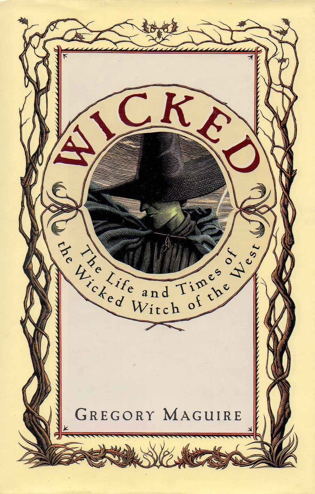

"Wicked: The Life and Times of the Wicked Witch of the West (The Wicked Years, #1)"
- Read on 2008-11-13
- Rating: ️️️️️
- Format: 🎧 (19 hours 42 minutes)
As one of the characters said in this book, "The more civilized we become, the more horrendous our entertainments." With this in mind, I may be very civilized, since I thought this book was horrendous (though I liked that quote).
I really wanted to find out about the WWotW, so I actually finished this book, though the vast majority was not worth my time. The only part that didn't hold to that statement was Part V (which covered things from the time Dorothy and the house landed). Admittedly, this section of the book only made as much sense as it did having read the rest of the book.